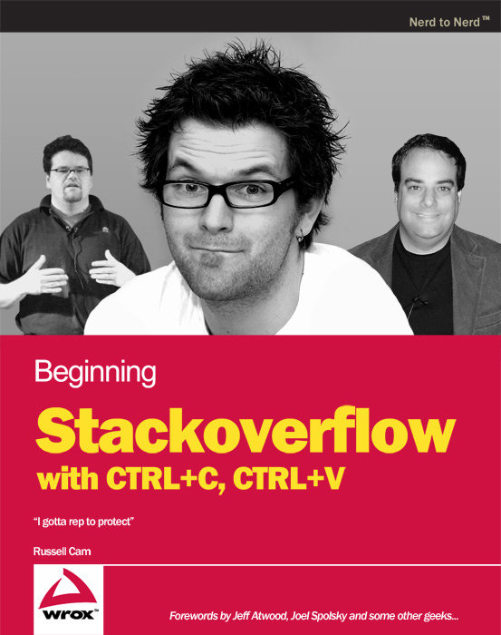
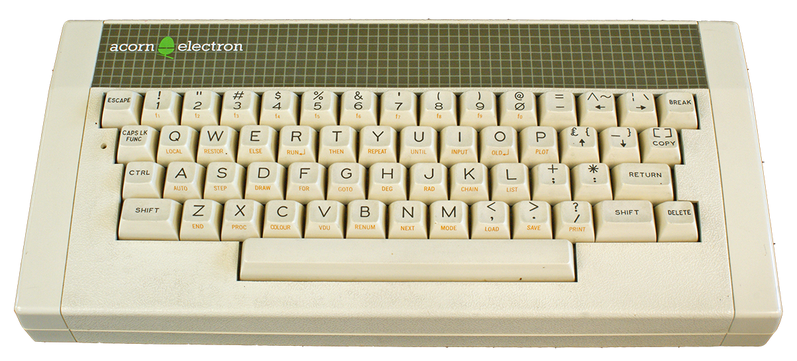
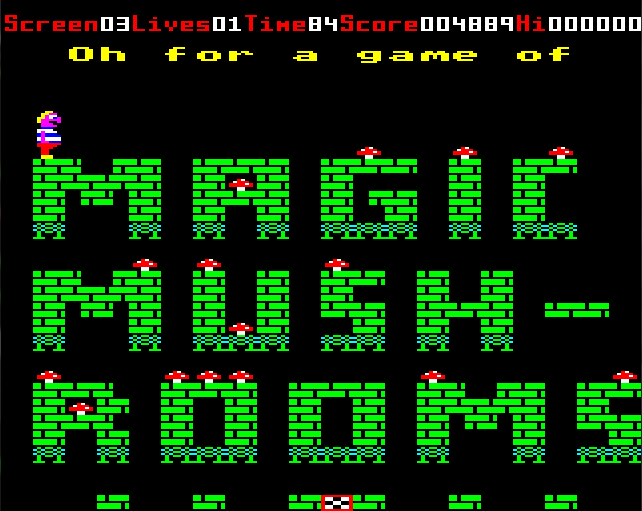
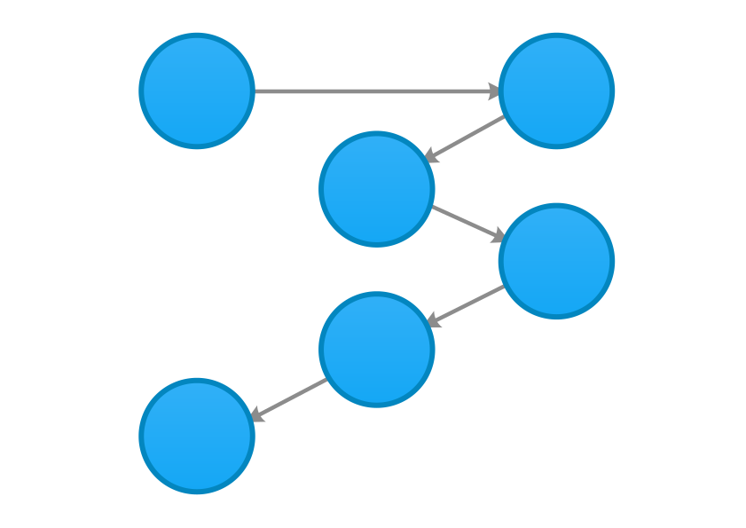
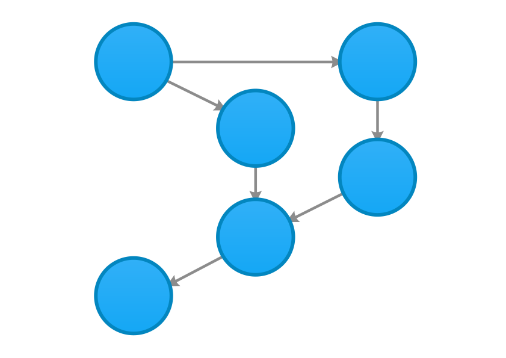
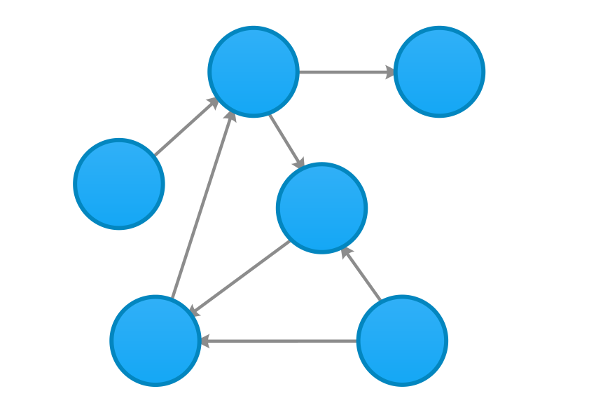
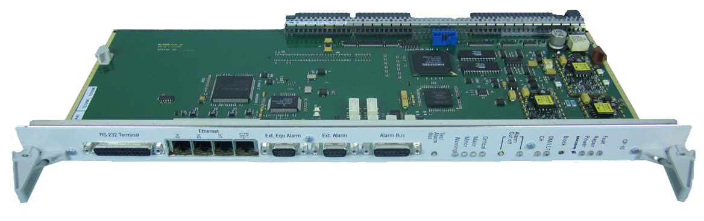
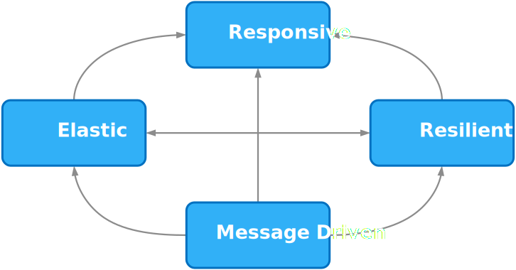

Akka.NET with F#
Getting functional with Reactive systems
Russ Cam @forloop
About me
- Independent Software Engineer
-
Interested in
- Distributed systems
- Cloud computing
- Message-driven architectures
-
Software Design,
Patterns and Practices
- Holla!
My First Computer
The Acorn Electron
Classic titles
WELCOME TO THE FUTURE!
Agent-based Programming
a.k.a. The Actor model
...is a mathematical model of concurrent computation that treats "actors" as the universal primitives of concurrent computation: in response to a message that it receives, an actor can make local decisions, create more actors, send more messages, and determine how to respond to the next message received.
First proposed in 1973!
Sequential flow
Parallel flow
Agent-based (Actor) flow
Ericsson AXD 301
- Erlang
- 99.9999999% uptime - "9 Nines"
- over 20 years!
- ~0.631 secs downtime per year
akka.net
- Port of the JVM Akka Toolkit to the .NET Framework
- Heavily influenced by the Actor model implementation in Erlang
Who's using akka?
Reactive Manifesto
Anatomy of an actor
Who creates the first Actor?
Actor System
Creating Actors
types
type EchoActor() =
inherit UntypedActor()
override this.OnReceive (msg:obj) =
printfn "Received message %A" msg
let system = System.create "system" <| Configuration.defaultConfig()
// Use Props() to create actor from type definition
let echoActor = system.ActorOf(Props(typedefof<EchoActor>), "echo")
// tell a message
echoActor <! "Hello World!"
How very C# like!
Let's get functional
actorOf
Receives next message from mailbox
let echo (msg:obj) =
printfn "Received message %A" msg
let system = System.create "system" <| Configuration.defaultConfig()
// use spawn in conjunction with actorOf.
// Wraps provided function to give actor behaviour
let echoActor = spawn system "echo" (actorOf echo)
// tell a message
echoActor <! "Hello World!"actorOf2
Receives "self" actor and next message from mailbox
let echo (mailbox:Actor<'a>) msg =
printfn "Received message %A" msg
let system = System.create "system" <| Configuration.defaultConfig()
// use spawn in conjunction with actorOf2.
// Wraps provided function to give actor behaviour
let echoActor = spawn system "echo" (actorOf2 echo)
// tell a message
echoActor <! "Hello World!"actor computation expression
Receives "self" actor and returns a Continuation
let echo (mailbox:Actor<'a>) =
let rec loop () = actor {
let! msg = mailbox.Receive ()
printfn "Received message %A" msg
return! loop ()
}
loop ()
let system = System.create "system" <| Configuration.defaultConfig()
// use spawn in conjunction with actor computation expression
let echoActor = spawn system "echo" echo
// tell a message
echoActor <! "Hello World!"I can create actors, now what?
Message passing
ActorRef
// ActorRef
let echoActorRef = spawn system "echo"
(actorOf (fun m -> printfn "received %A" m))
// tell a message to actor ref
echoActorRef <! "Hello World!"
ActorSelection
// ActorSelection, using wildcard actor path
let echoActorSelection = select "/user/echo*" system
// tell a message to actor selection
echoActorSelection <! "Hello World!"
Tell
One way, Fire & Forget
actor <! message
Ask
Request / Response
async {
let! response = actor <? message
// do something with response
} |> Async.RunSynchronously
Forward
actorToForwardTo.Forward message
PipeTo
async {
// some async workflow
} |!> myActor
or
myActor <!| async {
// some async workflow
}
What about that hierarchy of actors?
Supervision
type CustomException() =
inherit Exception()
type Message =
| Echo of string
| Crash
let system = System.create "system" <| Configuration.defaultConfig()
let child (childMailbox:Actor<Message>) =
let rec childLoop() = actor {
let! msg = childMailbox.Receive()
match msg with
| Echo info ->
let response =
sprintf "Child %s received: %s"
(childMailbox.Self.Path.ToStringWithAddress()) info
childMailbox.Sender() <! response
| Crash ->
printfn "Child %A received crash order"
(childMailbox.Self.Path)
raise (CustomException())
return! childLoop()
}
childLoop()
let parent (parentMailbox:Actor<Message>) =
// parent actor spawns child - is the supervisor of the child
let child = spawn parentMailbox "child" child
let rec parentLoop() = actor {
let! (msg: Message) = parentMailbox.Receive()
child.Forward msg
return! parentLoop()
}
parentLoop()
// spawn with options to define a Supervisor Strategy
let parentChild =
spawnOpt system "parent" parent <|
[ SpawnOption.SupervisorStrategy (
Strategy.OneForOne(fun e ->
match e with
| :? CustomException -> Directive.Restart
| _ -> SupervisorStrategy.DefaultDecider(e))); ]
Lifecycle Monitoring
a.k.a. Deathwatch
monitor (targetActor:IActorRef, watcher:ICanWatch)
and
demonitor (targetActor:IActorRef, watcher:ICanWatch)
Creating groups of similar actors?
Routers
Pools and Groups
- RoundRobin
- Broadcast
- Consistent Hashing
- TailChopping
- ScatterGatherFirstCompleted
- SmallestMailbox
- Random
Scaling out?
Akka Remote
Shared assemblies
let config = Configuration.parse """
akka {
actor {
provider =
"Akka.Remote.RemoteActorRefProvider, Akka.Remote"
deployment {
/my-actor {
remote = "akka.tcp://system2@localhost:8080"
}
}
}
remote {
helios.tcp {
transport-class =
"Akka.Remote.Transport.Helios.HeliosTcpTransport, Akka.Remote"
applied-adapters = []
transport-protocol = tcp
port = 8090
hostname = localhost
}
}
}"""
let system = System.create "system" <| config
let myActor = system.ActorOf<SomeActor>("my-actor")
F# Quotations
let system = System.create "system" <| Configuration.defaultConfig()
let myActor = spawne system "my-actor"
<| (<@ fun mailbox ->
printfn "Actor pre start"
mailbox.Defer (fun () -> printfn "Actor post stop")
let rec loop () =
actor {
let! msg = mailbox.Receive ()
// msg handling here
return! loop ()
}
loop () @>)
[SpawnOption.Deploy(
Deploy(RemoteScope (Address.Parse "akka.tcp://system2@localhost:8080")))]
Changing Actor Behaviour?
FSM
Finite State Machine
let actor = spawn system "MyActor" <|
fun mailbox ->
let rec loop1() = actor {
let! message = mailbox.Receive()
// do something with message
return! loop2()
}
and loop2() = actor {
let! message = mailbox.Receive()
return! loop3()
}
and loop3() = actor {
let! message = mailbox.Receive()
return! loop1()
}
loop1()
EXAMPLES
No time for...
Dispatchers
Mailboxes
Event stream/bus
Scheduler
Clustering
Testing
Persistence/Snapshots
Books

Online Resources
Jump in!
Thanks!
Addendum
What about TPL Dataflow?
MSDN documentation on TPL DataflowWhat about MailboxProcessor<`a>?
Messages and Actors - F# for fun and profit#nowarn "40"
let printerAgent = MailboxProcessor.Start(fun inbox->
// the message processing function
let rec messageLoop = async {
// read a message
let! msg = inbox.Receive()
// process a message
printfn "message is: %s" msg
// loop to top
return! messageLoop
}
// start the loop
messageLoop
)